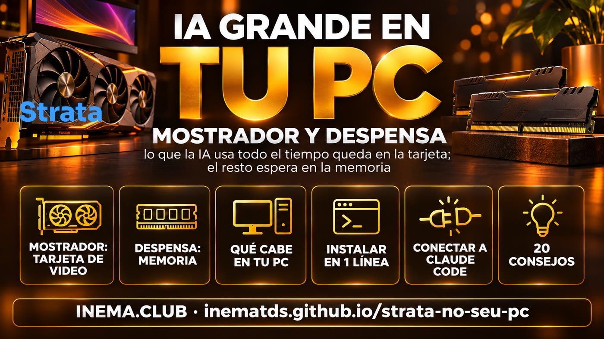

Te encuentras con límites de uso y quieres mantener tus archivos en tu PC. Strata ejecuta IA localmente y conecta tus herramientas. Mínimo: 32 GB de RAM con una tarjeta gráfica compatible de 12 GB, con limitaciones; 48–64 GB de RAM para los paquetes principales y un SSD con espacio.
Quieres usar IA sin pagar por cada pregunta y mantener tus archivos en tu computadora. Strata es un motor gratuito y de código abierto que divide una IA grande entre la tarjeta gráfica, la memoria y el almacenamiento. Este kit te ayuda a elegir un tamaño y conectar tus herramientas con base en la documentación oficial. Necesitas hardware compatible, memoria y espacio para el modelo; si tienes Windows o Mac y solo quieres conversar, puedes usar la aplicación y saltarte la parte técnica.

MoE (mezcla de expertos) es un equipo de partes especializadas del modelo. Qwen3.8 tiene 24.576 expertos y usa 10 por palabra, según la explicación de la documentación.
La VRAM (memoria de la tarjeta gráfica) guarda los expertos más usados y hace la parte común de cada palabra. En este método, más VRAM vale más que una tarjeta más rápida.
La RAM (memoria de la computadora) guarda los expertos. El procesador trabaja con los que no caben en la tarjeta, al mismo tiempo que esta.
El SSD guarda la tabla de consulta. Si falta RAM, también proporciona expertos, pero mucho más lentamente. NVMe (interfaz rápida para SSD) importa cuando el disco participa mucho.
Un asistente pequeño sugiere las siguientes palabras. El modelo grande las verifica y solo acepta las que aprueba. La documentación describe la misma calidad con menos espera.
Fuente: HOW_IT_WORKS.md y MODELS.md, en docs-oficiais/.
Elige según la RAM detectada. La suma de RAM + VRAM es solo una referencia; la memoria unificada se cuenta una sola vez. Los rangos son contiguos: 30–45,9 significa 30 ≤ RAM < 46, e incluye lecturas como 45,99. Son agrupaciones conservadoras del kit, no nuevos requisitos oficiales.
Q2_0, IQ2_XS, IQ3_S, UD-Q4_K_XL, NVFP4 son niveles de compresión del mismo modelo: menos bits = menos memoria y un poco menos de calidad. ISTA-DASLab y Unsloth son grupos que preparan estos paquetes.
bpw significa bits por peso (cuántos bits guardan cada parámetro del modelo). mmap asigna un archivo a la memoria y te permite leer partes según lo necesites. WSL es Linux dentro de Windows. CLI es la interfaz de línea de comandos, que se usa en la terminal. JSON es un formato de datos con nombres y valores. Endpoint es una dirección del servidor que recibe un tipo de solicitud.
| Memoria | RAM detectada | Opciones y par --family / --model |
|---|---|---|
| RAM + tarjeta gráfica dedicada | <30 GB | Sin recomendación automática segura |
| RAM + tarjeta gráfica dedicada | 30–45,9 GB | Gyro-S (--family gyro --model Gyro-S); Coder (--family coder --model IQ1_M) |
| RAM + tarjeta gráfica dedicada | 46–61,9 GB | Q2_0 (--family qwen --model Q2_0); IQ2_XS (--family qwen --model IQ2_XS) |
| RAM + tarjeta gráfica dedicada | 62–93,9 GB | Q2_0 (--family qwen --model Q2_0); IQ2_XS (--family qwen --model IQ2_XS); IQ3_XXS (--family qwen --model IQ3_XXS); IQ3_S (--family qwen --model IQ3_S) |
| RAM + tarjeta gráfica dedicada | 94–125,9 GB | Q2_0 (--family qwen --model Q2_0); IQ2_XS (--family qwen --model IQ2_XS); IQ3_XXS (--family qwen --model IQ3_XXS); IQ3_S (--family qwen --model IQ3_S); UD-IQ4_XS (--family unsloth --model UD-IQ4_XS); UD-Q4_K_XL (--family unsloth --model UD-Q4_K_XL) |
| RAM + tarjeta gráfica dedicada | ≥126 GB | Q2_0 (--family qwen --model Q2_0); IQ2_XS (--family qwen --model IQ2_XS); IQ3_XXS (--family qwen --model IQ3_XXS); IQ3_S (--family qwen --model IQ3_S); UD-IQ4_XS (--family unsloth --model UD-IQ4_XS); UD-Q4_K_XL (--family unsloth --model UD-Q4_K_XL); UD-Q5_K_XL (--family unsloth --model UD-Q5_K_XL); UD-Q6_K_XL (--family unsloth --model UD-Q6_K_XL) |
| Unificada: Mac / DGX Spark | <30 GB | Sin recomendación automática segura |
| Unificada: Mac / DGX Spark | 30–45,9 GB | Sin recomendación automática segura |
| Unificada: Mac / DGX Spark | 46–61,9 GB | IQ2_XS (Mac) (--family qwen --model IQ2_XS) |
| Unificada: Mac / DGX Spark | 62–93,9 GB | IQ3_XXS (Mac) (--family qwen --model IQ3_XXS); IQ3_S (Mac) (--family qwen --model IQ3_S) |
| Unificada: Mac / DGX Spark | 94–125,9 GB | IQ3_S (Mac o DGX Spark de 128 GB) (--family qwen --model IQ3_S); NVFP4 (solo DGX Spark de 128 GB) (--family nvfp4 --model NVFP4) |
| Unificada: Mac / DGX Spark | ≥126 GB | IQ3_S (Mac o DGX Spark de 128 GB) (--family qwen --model IQ3_S); NVFP4 (solo DGX Spark de 128 GB) (--family nvfp4 --model NVFP4) |
En el rango de 62–93,9 GB de RAM con una tarjeta gráfica separada, los cuatro paquetes son opciones: Q2_0 es el más rápido. Con 62,5 GB leídos, quedan Q2_0: 18,5 GB; IQ2_XS: 17 GB; IQ3_XXS: 9,5 GB; IQ3_S: 2,5 GB. El cálculo reserva 10 GB para el sistema. La documentación dice que con 64 GB de RAM caben todos, IQ3_S con muy pocas cosas abiertas.
Memoria restante estimada: RAM leída − expertos − 10 GB. Expertos: Q2_0 34; IQ2_XS 35,5; IQ3_XXS 43; IQ3_S 50; Coder 23; Unsloth UD-IQ4_XS 72, UD-Q4_K_XL 88, UD-Q5_K_XL 108 y UD-Q6_K_XL 118 GB. Memoria restante de 0 a menos de 3 GB: “cabe justo”; negativa: “no cabe en el modo normal; solo en modo de poca RAM”. En el rango de 30–45,9, necesitas una GPU compatible de al menos 12 GB; Coder usa poca RAM y el SSD, con pérdida de velocidad. Para Gyro-S, la documentación solo indica la memoria conjunta: memoria restante de referencia = RAM + VRAM − 27,6 − 10 GB; esto no confirma cómo se divide entre las dos memorias.
Memoria unificada: los mismos rangos, sin sumar VRAM. Mac requiere Apple Silicon y macOS 15+; comprueba el paquete en el plan. Las opciones Spark solo se aplican al DGX Spark documentado de 128 GB nominales, aunque el sistema lea 125 GB. No se ha confirmado para otros sistemas ARM. En Spark, NVFP4 usa un archivo de expertos de 68 GB con mmap: RAM − 68 − 10 es solo una referencia, porque el contexto, la caché y la tabla también compiten por la memoria. Q2_0 y Gyro no funcionan en Spark.
Disco: Q2_0, IQ2_XS e IQ3_XXS tienen un rango de descarga conjunto de 66–76 GB; el script compara con 76 GB. IQ3_S: 84 GB es una referencia para DGX Spark, no una cifra universal para x86; confirma con --plan después de instalar. Gyro-S: 58,5 GB. Coder: ~58,6 GB, estimación del kit (29,6 + ~29). Unsloth: 94/111/158/169 GB en el orden de la lista; NVFP4: 128 GB. Reserva espacio adicional para archivos auxiliares y preparación. IQ3_S requiere tener pocas cosas abiertas; Q8_0 no está en la lista automática: ~136 GB solo para expertos.
MODELS.md · DGX_SPARK_LINUX.md · FATOS.md
Según el README oficial, DeepSeek V4.1-Flash 2.00 bpw en la RTX 5070 12 GB + 64 GB de RAM produce 4–6 tokens/s. Es una medición del proyecto, no de este kit.
Un token es un fragmento de texto; tokens/s significa tokens por segundo. 32K y 128K indican aproximadamente 32 mil y 128 mil tokens. Un puerto es el número que identifica el servicio en una dirección, como 8080.
Un token es un fragmento de texto. Leer la solicitud y escribir la respuesta son etapas diferentes; no compares sus velocidades como si fueran lo mismo.
El caso más parecido a 64 GB de RAM + tarjeta gráfica de 12–16 GB: RTX 5070 12 GB + Ryzen 5 7600 + 64 GB de RAM. El proyecto mide IQ3_S ~53 e IQ3_XXS ~62 tokens/s en respuestas cortas. MODELS.md: mediciones históricas del motor 0.1.26 (Q2_0: 0.1.36), no repetidas íntegramente para la versión actual; no son una promesa para otra tarjeta gráfica.
| Paquete | Respuesta corta (tokens/s) | Respuesta en 128K (tokens/s) | Lectura de 32K (tokens/s) |
|---|---|---|---|
| Q2_0 | 94 | 76 | 2650 |
| IQ2_XS | 79 | 63 | 2090 |
| IQ3_XXS | 62 | 49 | 1750 |
| IQ3_S | 53 | 46 | 1620 |
| Coder (IQ1_M) | 55 | 43 | 2180 |
DeepSeek 2.00 bpw en una RTX 3060 12 GB + 46 GB de RAM: el README (Strata 0.2.5) indica 9–11 tokens/s; MODELS.md (Strata 0.2.4, antes de la opción Speed) indica 6–9. Son registros distintos; no los trate como una única medición.
Respuesta: RTX 5060 Ti con 16 GB de VRAM + 128 GB de RAM, Qwen3.8 IQ3_S. Medición de la comunidad: compilación del código, versión 0.1.41, una ronda por escenario, con proyección experimental de velocidad.
Respuesta: RTX 3060 12 GB + 46 GB de RAM, DeepSeek V4.1-Flash 2.00 bpw. Medición del README oficial, Strata 0.2.5; modelo y condiciones distintos de los de la tarjeta de al lado.
Respuesta: DGX Spark, IQ3_S. La documentación registra alrededor de 45–48 tokens/s, según el escenario.
Lectura de texto largo, según la explicación del motor. No es la velocidad de escritura de la respuesta.
Contexto nativo: espacio para el texto que el modelo considera. No significa que quepa con cualquier hardware o configuración.
Medido por el proyecto y su comunidad, no por nosotros. Fuentes: strata-README.md, COMMUNITY_BENCHMARKS.md, DGX_SPARK_LINUX.md, HOW_IT_WORKS.md y FATOS.md.
Aquí, “gratis” significa que el motor local no cobra por token. No es una promesa de que todas las funciones de los programas conectados sean gratuitas. El servidor se comunica mediante la API (interfaz entre programas) compatible con OpenAI y Anthropic. Puedes conectar Claude Code, Codex CLI, OpenCode y otras herramientas al modelo local.
El motor local no cobra por token. La electricidad corre por tu cuenta; las herramientas conectadas mantienen sus propias condiciones de uso.
Las conversaciones con el modelo local permanecen en la PC. Las búsquedas, páginas y servicios externos que elijas pueden enviar datos fuera de ella.
Si abres el servidor para otros dispositivos, conserva la clave de acceso. Las herramientas conectadas tienen sus propias reglas de red.
Fuentes: SAFETY.md, TERMINAL_LAUNCH.md y FATOS.md.
| Lo que se dice | Lo que dice la documentación |
|---|---|
| “Cualquier tarjeta de 8 GB ejecuta el de 94 GB”. | 94 GB es la descarga de UD-IQ4_XS. La documentación requiere ~72 GB de RAM para todos los expertos; revisa la tabla y la GPU. |
| “Es solo un script y listo”. | Hay una aplicación o install.sh/install.ps1, después hay que elegir el tamaño, descargar y preparar. |
| “Más rápido = tarjeta más rápida”. | En este método importa más tener más VRAM, porque guarda más expertos cerca del cálculo. |
Fuentes: MODELS.md, INSTALL.md y HOW_IT_WORKS.md.
Fuentes: MODELS.md, DGX_SPARK_LINUX.md, SAFETY.md y FATOS.md.
No necesitas esta parte para entender lo anterior.
Elecciones, cuidados y problemas frecuentes.
RAM, VRAM, tamaño y calidad.
Configuración y acceso con clave.
Antes de instalar, Windows, Linux/Mac y Spark.
Script de solo lectura para Bash ya disponible.
Antes de instalar · Windows · Linux/Mac · Spark
La salida de qual_tamanho.sh sigue en portugués.
Antes de cualquier descarga, consulta “Qué cabe en tu PC” y la checklist “Antes de instalar”. Revisa la memoria, el disco y el hardware compatible; si necesitas el script, primero sigue el paso 2. Las rutas de aplicación y terminal son alternativas. Estos comandos están documentados para que los ejecutes cuando decidas instalar. No ejecutamos nada de Strata. Fuentes: INSTALL.md, TERMINAL_LAUNCH.md y DGX_SPARK_LINUX.md.
Antes, mira el tamaño en la tabla (paso 2).
Abre la versión oficial y elige el instalador de tu sistema. En la versión descrita en la documentación, Windows usa Strata-0.2.13-windows-x64-setup.exe; Mac usa Strata-0.2.13-macos-arm64.dmg. El nombre del archivo cambia con cada versión. Los archivos strata-engine son componentes, no instaladores. Mac: Apple Silicon y macOS 15 o posterior; abre el .dmg y arrastra Strata a Applications (Aplicaciones). Después de comprobar el tamaño, instala y elige el motor y el modelo. Espera a que termine la preparación, abre el chat de la aplicación y envía tu pregunta. La respuesta debería aparecer en la conversación; si hay un error, consulta los consejos de abajo. Puedes saltarte los comandos de terminal.
Linux x86-64 usa .AppImage. Release significa una versión publicada para descargar.
Linux: en la carpeta de descarga, haga ejecutable el AppImage y ábralo (INSTALL.md; ajuste el nombre a la versión descargada):
chmod +x Strata-0.2.13-linux-x86_64.AppImage
./Strata-0.2.13-linux-x86_64.AppImageCompara tu memoria con la tabla de tamaños de arriba antes de cualquier descarga.
Descarga el ZIP del kit, descomprímelo y abre la carpeta en una terminal (ventana para escribir comandos). Si ya tienes Bash (un programa que interpreta comandos de terminal), ejecuta:
QT_LANG=es bash ferramentas/qual_tamanho.shEl script usa Bash; la salida traducida con QT_LANG=en o QT_LANG=es también requiere tener instalado Python 3. Sin QT_LANG, el idioma predeterminado es portugués.
Windows sin Bash: abre el Administrador de tareas (Ctrl+Shift+Esc) > Rendimiento > Memoria para la RAM; GPU > Memoria dedicada para la tarjeta; Disco para identificar el almacenamiento. Configuración > Sistema > Acerca de también muestra la RAM. Para el espacio libre, abre el Explorador de archivos > Este equipo y revisa la unidad de destino. Compara con la tabla antes de descargar.
En Linux/Mac/WSL, usa el script anterior. Compara el espacio libre de la carpeta actual con la descarga sugerida, pero los archivos auxiliares y la preparación necesitan espacio adicional. No instala nada ni detecta VRAM de AMD/Intel.
Con 32 GB de RAM y tarjeta de 12–16 GB: Gyro-S para uso general (27,6 GB sumando RAM y tarjeta; descarga de 58,5 GB) o Coder para código, en modo de poca RAM. Con tarjeta de 16 GB la suma llega a 48 GB, pero la RAM sigue siendo 32 GB.
Linux/Mac: curl guarda install.sh en la carpeta actual; luego, sh ejecuta ese archivo.
curl -fsSL --connect-timeout 15 --max-time 120 https://github.com/Niko1221/Strata/releases/latest/download/install.sh -o install.sh && sh install.shWindows PowerShell:
irm -TimeoutSec 120 https://github.com/Niko1221/Strata/releases/latest/download/install.ps1 | iexDespués de instalar Strata y abrir una terminal nueva, comprueba el plan antes de descargar el modelo. Elige solamente el comando de la opción compatible de la tabla; --plan muestra el plan sin iniciar el modelo. No cambies solo el tamaño y mantengas la familia qwen: Coder, Gyro, Unsloth y NVFP4 tienen familias propias. Para IQ3_S en x86, confirma aquí la descarga para tu plataforma.
strata launch --plan --family gyro --model Gyro-S
strata launch --plan --family coder --model IQ1_M
strata launch --plan --family qwen --model Q2_0
strata launch --plan --family qwen --model IQ2_XS
strata launch --plan --family qwen --model IQ3_XXS
strata launch --plan --family qwen --model IQ3_S
strata launch --plan --family unsloth --model UD-IQ4_XS
strata launch --plan --family unsloth --model UD-Q4_K_XL
strata launch --plan --family unsloth --model UD-Q5_K_XL
strata launch --plan --family unsloth --model UD-Q6_K_XL
strata launch --plan --family nvfp4 --model NVFP4Después de instalar, abre una nueva ventana de PowerShell. En Linux/Mac, el instalador muestra la ruta del comando (normalmente ~/.local/bin/strata); usa esa ruta si no encuentra el comando. La documentación no especifica un mensaje final de éxito. Luego elige el modelo, la carpeta, el contexto y el acceso:
strata launchPowerShell es la terminal de comandos de Windows: abre Inicio, escribe PowerShell y abre la aplicación.
Para comprobar que funcionó, consulte la dirección y el modelo en ejecución (TROUBLESHOOTING.md y AI_SETUP.md):
strata launch --status
strata doctor --liveLinux/Mac, en el puerto predeterminado:
curl -fsS http://127.0.0.1:8080/health
curl -fsS http://127.0.0.1:8080/v1/modelsPowerShell:
Invoke-RestMethod http://127.0.0.1:8080/health
Invoke-RestMethod http://127.0.0.1:8080/v1/modelsUsa la dirección indicada por launch y la credencial configurada para los endpoints protegidos. Confirma el modelo cargado y envía una pregunta, o usa la verificación de la herramienta en el paso 4. El código de salida 0 por sí solo no demuestra que el servidor haya iniciado.
Instala Node.js con npm desde https://nodejs.org. Comprueba ambas versiones antes de instalar las CLIs:
node -v
npm -vstrata connect claude-code y strata connect codex muestran la clave enmascarada de forma predeterminada. Antes de copiar ANTHROPIC_AUTH_TOKEN o STRATA_API_KEY, usa strata connect claude-code --show-key o strata connect codex --show-key, respectivamente; otra opción es strata launch --show-key. Copia la clave real, no la máscara.
npm i -g @anthropic-ai/claude-code
npm i -g @openai/codexObtén la clave local con strata launch --show-key o en la pantalla Connect de launch (pulsa k para mostrarla), según TERMINAL_LAUNCH.md. Sustituye CLAVE_DE_STRATA por el valor mostrado. Antes de usar Codex, define la variable en esta misma ventana:
Linux/Mac:
export STRATA_API_KEY="CLAVE_DE_STRATA"PowerShell:
$env:STRATA_API_KEY="CLAVE_DE_STRATA"Claude Code y Codex CLI son asistentes de programación en la terminal. El monitor es la pantalla de seguimiento que strata launch abre en la terminal. Presiona q y elige mantener el servidor en segundo plano. Prompt es el pedido de texto enviado al modelo.
strata connect claude-code (nombre alternativo: claude) muestra lo que irá en ~/.claude/settings.json; --write guarda con copia de seguridad del archivo existente; --check comprueba la conexión. Configura ANTHROPIC_BASE_URL (dirección sin /v1), ANTHROPIC_AUTH_TOKEN (clave de tu Strata; no se usa ninguna cuenta de Anthropic), modelo, CLAUDE_CODE_MAX_CONTEXT_TOKENS y CLAUDE_CODE_MAX_OUTPUT_TOKENS. Después usa claude -p "tu tarea" o claude. El aviso [claude-code:unrecognized_model] es inofensivo.
strata connect codex muestra la configuración; --write guarda ~/.codex/config.toml con copia de seguridad. Define STRATA_API_KEY en la terminal con la clave de tu Strata, siguiendo las instrucciones generadas (no es una clave de OpenAI). La variable es obligatoria; sin clave en el servidor, cualquier texto funciona. El aviso "Model metadata ... not found" es inofensivo.
Para quienes usan Claude Code con la suscripción: --write modifica el archivo global ~/.claude/settings.json; Claude Code pasa a usar Strata y deja de usar la suscripción en esas llamadas. Para conservar la configuración global, abre un terminal separado y ejecuta strata connect claude-code sin --write. Copia todas las variables que imprime (dirección, clave, modelos y límites) y expórtalas solo en ese terminal. Los ejemplos de abajo son plantillas: sustituye ... por los valores impresos. Después abre claude en ese mismo terminal. Para volver a la suscripción, cierra ese terminal.
Copia TODAS las variables que imprima strata connect claude-code. Imprime JSON, con las variables dentro de env; JSON no es un comando de terminal. Para cada par "NOMBRE": "valor", usa export NOMBRE="valor" en Bash o $env:NOMBRE="valor" en PowerShell. Sustituye ... por los valores reales, incluidos los modelos y los límites. Incluye CLAUDE_CODE_SIMPLE="1" solo si aparece en el JSON (contexto ≤ 40.960 tokens, 40K). Ejecuta claude en ese mismo terminal.
strata connect claude-code --show-key
export ANTHROPIC_BASE_URL="..."
export ANTHROPIC_AUTH_TOKEN="..."
export ANTHROPIC_MODEL="..."
export ANTHROPIC_SMALL_FAST_MODEL="..."
export ANTHROPIC_DEFAULT_SONNET_MODEL="..."
export ANTHROPIC_DEFAULT_OPUS_MODEL="..."
export ANTHROPIC_DEFAULT_HAIKU_MODEL="..."
export CLAUDE_CODE_DISABLE_NONESSENTIAL_TRAFFIC="1"
export DISABLE_AUTOUPDATER="1"
export DISABLE_TELEMETRY="1"
export CLAUDE_CODE_MAX_CONTEXT_TOKENS="..."
export CLAUDE_CODE_MAX_OUTPUT_TOKENS="..."
# Solo si aparece en el JSON (contexto ≤ 40.960 tokens):
export CLAUDE_CODE_SIMPLE="1"strata connect claude-code --show-key
$env:ANTHROPIC_BASE_URL="..."
$env:ANTHROPIC_AUTH_TOKEN="..."
$env:ANTHROPIC_MODEL="..."
$env:ANTHROPIC_SMALL_FAST_MODEL="..."
$env:ANTHROPIC_DEFAULT_SONNET_MODEL="..."
$env:ANTHROPIC_DEFAULT_OPUS_MODEL="..."
$env:ANTHROPIC_DEFAULT_HAIKU_MODEL="..."
$env:CLAUDE_CODE_DISABLE_NONESSENTIAL_TRAFFIC="1"
$env:DISABLE_AUTOUPDATER="1"
$env:DISABLE_TELEMETRY="1"
$env:CLAUDE_CODE_MAX_CONTEXT_TOKENS="..."
$env:CLAUDE_CODE_MAX_OUTPUT_TOKENS="..."
# Solo si aparece en el JSON (contexto ≤ 40.960 tokens):
$env:CLAUDE_CODE_SIMPLE="1"La misma precaución se aplica a Codex: --write modifica ~/.codex/config.toml global y cambia el proveedor a Strata. Sin modificar ese archivo, ejecuta strata connect codex sin --write; copia la configuración en opciones -c solo para esa ejecución y define STRATA_API_KEY en el terminal separado. La variable de la clave por sí sola no selecciona Strata. En la plantilla de abajo, sustituye ... por los valores generados; usa también los límites model_context_window y model_auto_compact_token_limit impresos por el generador. Al terminar esa ejecución y cerrar el terminal, la configuración global permanece como estaba.
Los ejemplos sin --write incluyen todas las opciones que codex_file escribe en harness.py.txt: model_reasoning_summary="auto", approval_policy="never", sandbox_mode="workspace-write" y check_for_update_on_startup=false, además del modelo, proveedor, límites y tiempo de espera. approval_policy="never" hace que Codex no pida aprobación. workspace-write permite escribir en el espacio de trabajo. Estas opciones -c solo valen para esta ejecución.
strata connect codex --show-key
export STRATA_API_KEY="..."
codex -c 'model="..."' -c 'model_provider="strata"' -c 'model_providers.strata.name="Strata (local)"' -c 'model_providers.strata.base_url="..."' -c 'model_providers.strata.wire_api="responses"' -c 'model_providers.strata.env_key="STRATA_API_KEY"' -c 'model_providers.strata.stream_idle_timeout_ms=600000' -c 'model_context_window=...' -c 'model_auto_compact_token_limit=...' -c 'model_reasoning_summary="auto"' -c 'approval_policy="never"' -c 'sandbox_mode="workspace-write"' -c 'check_for_update_on_startup=false'strata connect codex --show-key
$env:STRATA_API_KEY="..."
codex -c 'model="..."' -c 'model_provider="strata"' -c 'model_providers.strata.name="Strata (local)"' -c 'model_providers.strata.base_url="..."' -c 'model_providers.strata.wire_api="responses"' -c 'model_providers.strata.env_key="STRATA_API_KEY"' -c 'model_providers.strata.stream_idle_timeout_ms=600000' -c 'model_context_window=...' -c 'model_auto_compact_token_limit=...' -c 'model_reasoning_summary="auto"' -c 'approval_policy="never"' -c 'sandbox_mode="workspace-write"' -c 'check_for_update_on_startup=false'Si ya usaste --write, cerrar el terminal no deshace el cambio global: restaura la copia de seguridad de ~/.claude/settings.json o ~/.codex/config.toml indicada por el comando; si no había un archivo anterior, elimina solo la configuración creada. Revierte también las variables de entorno. --check envía una solicitud y una llamada a herramienta al servidor elegido; no se ejecutó aquí.
Usa el mismo instalador de Linux y strata launch. El paquete requiere glibc (biblioteca de Linux) 2.39+ y driver NVIDIA (software que controla la tarjeta) 580.65+. Elige IQ3_S, NVFP4 o DeepSeek 2.00 bpw; no Q2_0 ni Gyro. No hay aplicación para ARM.
Abre la checklist de Spark. El hardware documentado es Spark; no se ha confirmado otro ARM.
DGX Spark es una computadora compacta de NVIDIA con 128 GB de memoria unificada.
Suma la RAM (memoria de la computadora) y la VRAM (memoria de la tarjeta gráfica). En Mac y otros sistemas con memoria unificada, cuéntala una sola vez. La suma es solo una primera evaluación; reserva espacio para el sistema.
Origen: MODELS.md (docs-oficiais/).
La descarga no es uso de RAM: los paquetes originales más pequeños descargan 66–76 GB, además de los auxiliares. Elige una carpeta con espacio para la descarga y la preparación.
Origen: MODELS.md; INSTALL.md (docs-oficiais/).
SSD es almacenamiento rápido; NVMe es una interfaz para SSD. Si faltan expertos en la RAM, buscarlos en el disco vuelve la respuesta mucho más lenta; para DeepSeek, la documentación requiere NVMe.
Origen: MODELS.md (docs-oficiais/).
Usa TABELA.es.md y revisa la RAM por separado de la VRAM. El contexto y las aplicaciones abiertas también ocupan memoria; el archivo más grande disponible puede ser una mala elección para tu PC.
Origen: MODELS.md (docs-oficiais/).
Poca memoria, uso general: compara Unsloth y luego Gyro. En una PC con 32 GB de RAM + tarjeta de 12–16 GB, considera Gyro-S; para código, Coder. Ambos son alternativas más lentas. (Gyro: una forma de comprimir que usa menos memoria y es más lenta).
Origen: MODELS.md (docs-oficiais/).
Con 32 GB de RAM y una tarjeta de 24 GB, la documentación describe Q2_0, IQ2_XS y Coder en modo de poca RAM. Con una tarjeta de 12–16 GB, describe Coder; strata launch no tiene la opción --low-ram.
Origen: MODELS.md (docs-oficiais/).
La documentación recomienda empezar por el paquete ISTA-DASLab compatible que quepa. Unsloth guarda más bits y requiere más RAM: UD-IQ4_XS descarga 94 GB y requiere ~72 GB de RAM para todos los expertos.
Origen: MODELS.md (docs-oficiais/).
La tarjeta por sí sola no lo determina. Los 94 GB corresponden a la descarga de UD-IQ4_XS; la documentación requiere ~72 GB de RAM para mantener sus expertos, y con menos RAM parte del trabajo puede pasar al SSD.
Origen: MODELS.md (docs-oficiais/).
La documentación dice que en este método importa más tener más VRAM que una GPU más rápida. La tarjeta guarda los expertos más usados; tener más expertos allí reduce el trabajo del procesador.
Origen: HOW_IT_WORKS.md (docs-oficiais/).
Elige la aplicación o la terminal y, después, el modelo y el tamaño. La terminal usa install.sh o install.ps1 y strata launch; descargar el instalador no significa que el modelo ya esté listo.
Origen: INSTALL.md (docs-oficiais/).
Hay una aplicación para Windows, Linux x86-64 y Mac Apple Silicon. Mac requiere macOS 15 o posterior; Intel Arc usa la terminal en Linux, y el paquete para Mac no es compatible con Mac Intel.
Origen: INSTALL.md (docs-oficiais/).
Linux ARM64 no tiene aplicación. El proyecto documenta IQ3_S, NVFP4 y DeepSeek 2.00 bpw en Spark; Q2_0 y Gyro tienen kernels solo para x86 y no funcionan allí.
Origen: DGX_SPARK_LINUX.md (docs-oficiais/).
Los paquetes CUDA (plataforma de cálculo de NVIDIA) 13 requieren un driver NVIDIA 580 o posterior; en Spark, 580.65 o posterior. Las tarjetas NVIDIA antiguas usan la ruta CUDA 12; consulta la documentación antes de elegir el paquete.
Origen: INSTALL.md; OLDER_GPUS.md; DGX_SPARK_LINUX.md (docs-oficiais/).
strata connect muestra Claude Code, Codex CLI, OpenCode y otras herramientas. La dirección local predeterminada es http://127.0.0.1:8080; usa la dirección que Strata muestre para tu servidor.
Origen: TERMINAL_LAUNCH.md (docs-oficiais/).
strata connect opencode --write pregunta antes de guardar y conserva una copia de seguridad de lo que reemplazará. strata connect opencode --check envía un prompt y una llamada a una herramienta; es una verificación que puedes ejecutar.
Origen: TERMINAL_LAUNCH.md (docs-oficiais/).
Para empezar, deja el acceso en local.
Origen: TERMINAL_LAUNCH.md; SAFETY.md (docs-oficiais/).
La documentación dice que no se envían datos de uso, análisis ni informes de errores. Las instalaciones y actualizaciones acceden a la red; las búsquedas, páginas, túneles, servicios externos y servidores de herramientas también pueden hacerlo.
Origen: SAFETY.md (docs-oficiais/).
Las conversaciones locales permanecen en la PC, pero un modelo externo recibe la conversación cuando lo eliges. Claude Code y Codex son programas independientes: Strata no controla lo que envían.
Origen: SAFETY.md (docs-oficiais/).
Comando no encontrado: abre un nuevo PowerShell o usa la ruta del instalador en Linux/Mac. Descarga interrumpida: repite la acción y revisa el espacio; se reutilizan los pasos completados. Driver antiguo: actualízalo según el paquete y reinicia si es necesario.
Origen: TROUBLESHOOTING.md (docs-oficiais/).
Primer inicio lento: revisa el registro, cierra programas y reduce el modelo o el contexto si falta memoria. Puerto ocupado: revisa strata launch --status; --restart interrumpe las respuestas actuales. No cierres un programa ajeno por ocupar el puerto.
Origen: TROUBLESHOOTING.md (docs-oficiais/).
Los últimos consejos reúnen cinco problemas para consultar. La documentación no indica cuáles son los más comunes.